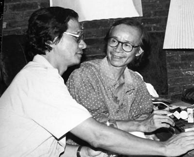
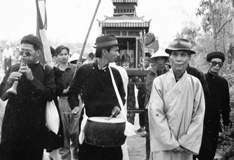
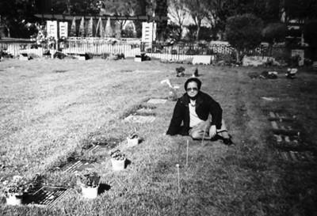
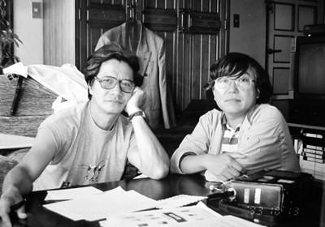
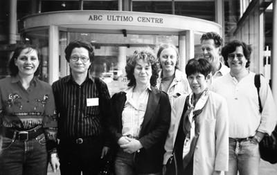
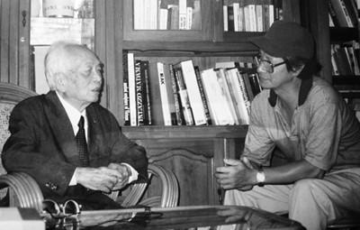
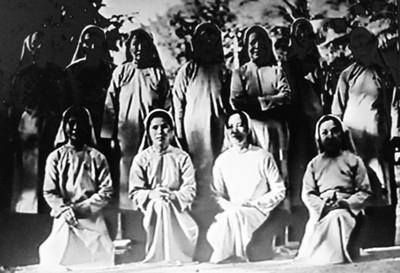

Hình như chuyện tâm linh vẫn là một sự đeo đẳng vô hình với tôi trong suốt cuộc đời làm nghề. Nó tựa như mạch sống âm ỉ, che chở nuôi dưỡng và nâng đỡ tôi. Một cảm giác mơ hồ, ấm áp, đủ đầy chứ không phải để cầu xin hay vụ lợi gì cho bản thân...
☆
Trong cuộc đời làm nghề, tôi cũng đã có nhiều dịp cộng tác làm phim với các đài truyền hình và các đồng nghiệp nước ngoài. Mỗi lần có những điều hay dở, khó dễ khác nhau.
Bộ phim đầu tiên tôi làm theo dạng này là với đài Channel 4 nước Anh. Nhớ lại, thời đó còn rất khó khăn về thủ tục.
Tôi có mặt ở Luân Đôn để bàn bạc với Channel 4, sau đó tôi về nước. Qua ông Nel Gibson, một đạo diễn người Anh có dịp đến Hà Nội, Channel 4 đã gửi văn thư để tiếp tục liên lạc với tôi. Chẳng may ông Nel Gibson đột tử trong khách sạn, bức thư được công an lưu giữ và tất nhiên là không bao giờ tới tay tôi.
Đài Channel 4 mà cụ thể là Rod Stoneman đã khôn ngoan gửi thẳng một bức thư cho Thủ tướng Võ Văn Kiệt với lời đề nghị nhờ thủ tướng chuyển bức thư đó đến tôi.
Ngày 27-1-1992, tôi được nhắn đến Hội Điện ảnh. Ở đó, ông Đặng Thế Truyền cán bộ Văn phòng Thủ tướng đã chuyển trực tiếp thư của Channel 4 cho tôi, yêu cầu tôi kí nhận và ông còn cho biết: Thủ tướng Võ Văn Kiệt dặn rằng: “Làm hay không làm là tùy đạo diễn, đừng để họ nghĩ là nhà nước cấm cản”.
Qua chuyện này tôi thấy người Anh cũng tinh quái. Ai đời lại nhờ một ông Thủ tướng chuyển thư cho một kẻ vô danh tiểu tốt như tôi. Nhưng đó là con đường ngắn, chắc chắn nhất, minh bạch nhất để tới được nơi cần đến.
Từ khi có ý kiến của thủ tướng, mọi thủ tục để thực hiện những bộ phim cộng tác với nước ngoài của tôi được suôn sẻ. Cục Điện ảnh, đặc biệt là anh Nguyễn Văn Tình phụ trách đối ngoại đã sốt sắng giúp tôi thực hiện chương trình này.
Bộ phim có tên “Một Cõi Tâm Linh” (A Spiritual World) gom góp nhiều chuyện về thờ cúng, âm dương, hiếu nghĩa, mồ mả, từ Bắc chí Nam với cái kết rất đậm về nhạc sĩ Trịnh Công Sơn - bản nhạc của Sơn Đường Xa Vạn Dặm và bài Điếu Kinh Về Mẹ .
Tôi yêu Trịnh Công Sơn từ những ngày tháng nằm hầm ở rừng. Mở đài Sài Gòn, áp cái “đài bán dẫn” vào tai để nghe “ Đại bác đêm đêm vọng về thành phố, người phu quét đường dừng chổi lắng nghe ...” mà nổi da gà. Sao thổn thức đến vậy, sao yêu thương đến vậy! Một thế giới mới gợi mở trong tôi. Trịnh Công Sơn, Sài Gòn và con người, cuộc sống ở đây qua nhạc Trịnh ám ảnh tôi từ đó. Ước mơ của tôi là được thấy Sơn, gặp Sơn, nghe Sơn nói... Tôi đã được toại nguyện khi cùng ê kíp làm phim và Trịnh Công Sơn, Trịnh Vĩnh Thúy làm “Một Cõi Tâm Linh”. Sơn còn chép tay cho tôi ca khúc Đường Xa Vạn Dặm và bài Điếu Kinh Về Mẹ .
Ở cuối phim tôi có viết rằng:
“...Từ lúc tuổi còn xanh, người nhạc sĩ này đã đặt bút viết:
...Hạt bụi nào hóa kiếp thân tôi,
để một mai tôi về làm cát bụi...
Mấy thập kỉ qua, nhạc phẩm của anh đã đi vào trái tim hàng triệu con người. Vậy mà anh tự nhận: ‘Tôi chỉ là gã hát rong đi qua miền đất này để hát lên những linh cảm của tôi về những giấc mơ đời hư ảo’.
Suốt một đời theo đuổi và thờ phụng cuộc sống tâm linh. Phải chăng bởi cõi tâm linh ấy mà anh đã trở thành Trịnh Công Sơn....”

Vậy mà anh tự nhận: Tôi chỉ là gã hát rong đi qua miền đất này để hát lên linh cảm của tôi về những giấc mơ đời hư ảo....
...Gần đây tôi mới ngộ ra rằng ý niệm về đời sống tâm linh cũng là một cái đạo, một tôn giáo, một di sản văn hóa tinh thần quan trọng của tổ tiên để lại. Phải chăng nó hiển nhiên là một tôn giáo với đầy đủ ý nghĩa chân chính của ngôn từ này. Một tôn giáo mà người ta tôn thờ một cách hoàn toàn tự nguyện và bền vững.
☆
Phải nói rằng hồn cốt của “ Một Cõi Tâm Linh ” có được là qua những trường đoạn quay ở Huế: Những phần mộ, nghĩa trang lâu đời với những câu chuyện huyền bí trên núi Ngự Bình, những bàn thờ thiên trên những mui thuyền sông Hương, những phong tục tiễn đưa người quá cố về nơi vĩnh hằng, những điệu hò Đưa Linh, hò Nện có thể chọn vào di sản văn hóa phi vật thể, những câu chuyện hiếu nghĩa khi mẹ cha khuất núi như chuyện của cô Bích Đàn... Những phong tục này xa xưa từng có ở miền Bắc nhưng đã bị mai một thất truyền. Có thể nói Huế là nơi lưu giữ những giá trị về văn hóa tâm linh, về cõi vĩnh hằng sâu sắc hơn bất cứ vùng đất nào của đất nước này.
Ở Huế tôi có nhiều bạn bè thân quý, trong đó có gia đình nhà văn Tô Nhuận Vỹ. Anh là một người bạn rất đằm thắm, rất Huế. Với hiểu biết sâu sắc về văn hóa Huế, anh đã tận tình giúp tôi thực hiện những trường đoạn quan trọng quay ở Huế trong phim “Một Cõi Tâm Linh”. Tôi vẫn nhớ chuyện này và cám ơn Tô Nhuận Vỹ rất nhiều.
☆

Có thể nói Huế là nơi lưu giữ những giá trị về văn hóa tâm linh, về cõi vĩnh hằng sâu sắc hơn bất cứ vùng đất nào của đất nước này...
Nhân đang nói về “Một Cõi Tâm Linh” với những trường đoạn đầy ắp chuyện hương khói, mồ mả, tôi xin thêm đôi lời tản mạn về chuyện bếp núc thế này:
Thời đạo diễn Lê Mạnh Thích còn sống, chúng tôi thường tụ bạ tán gẫu về chuyện làm nghề. Chả là đám đàn em phát hiện ra rằng, trong các phim của bầu Thích thế nào cũng phải có cảnh mưa... Trong các phim của của đạo diễn A thế nào cũng có cảnh mặt trời mọc, mặt trời lặn, rồi phim của đạo diễn B thế nào cũng có hoa lá mây trời. Rồi các bạn trẻ cũng phát hiện ra rằng trong các phim tôi làm, đề tài gì cũng nhất thiết phải có cảnh hương khói, mồ mả.
Tôi giật mình!
Thật vậy, quả là trên hai mươi phim tôi đã làm, hay dở gì chưa nói, nghĩ lại thấy lạ lùng là phim nào cũng có cảnh hương khói mồ mả. Tất tần tật, phim nào cũng có, kể ra không xuể, mà cũng tình cờ thôi.
Chuyện ở trong nước thì hương khói mồ mả của các nạn nhân chiến tranh, của các tử sĩ, của người đời, của bạn bè, của các bậc hiền tài tiên liệt.
☆
Quay ở nước ngoài thì theo các câu chuyện mà có mộ phần của các nhân vật: Federic Chopin, Honoré de Balzac, Alain Cadex (một thần tài kiểu Bà chúa kho), Victor Noire (một thanh niên Paris bị cháu của Napoléon III bắn chết), La Fontaine, Molière... ở nghĩa trang Pière la Chaise, hầm mộ Victor Hugo, Alexandre Duma và những danh nhân nước Pháp ở điện Panthéon. Rồi các nghĩa trang ở Marseille, ở Montpellier, ở Đức, ở Ý... Khi tới Luân Đôn, chúng tôi quay rất kĩ phần mộ của Karl Marx ở nghĩa trang High Gate.
☆
Tới nước nào, thành phố nào tôi cũng tìm thăm các nghĩa trang. Khi ở Mỹ tôi lui tới nơi an nghỉ của Abraham Lincoln, rồi các nghĩa trang ở Boston nơi tôi ở. Khi ở Westminter, Cali, ngay trước khu chung cư Green Lantern Village của Hoàng Khởi Phong, có nghĩa trang gọi là “Vườn Vĩnh Cửu”, nơi có nhiều văn nghệ sĩ người Việt nằm lại ở đó, tôi lần mò cả buổi tìm kiếm và nhẩm đọc các tên tuổi: nhà văn Mai Thảo, nhà thơ Nguyên Sa, nhạc sĩ Phạm Đình Chương, ca sĩ Ngọc Lan, nhà báo Lê Đình Điểu, kịch tác gia Vũ Hạ, nhạc sĩ Trầm Tử Thiêng, danh ca Thái Hằng và nhiều người khác nữa.

“Vườn Vĩnh Cửu” (ở Westninter), nơi có nhiều văn nghệ sĩ người Việt nằm lại ở đó...
Liền sau “Một Cõi Tâm Linh”, tôi hợp tác với đài NHK Nhật Bản để làm phim “Có Một Làng Quê” (There is a Village), làng Phù Lãng huyện Quế Võ tỉnh Bắc Ninh, làm nghề đất nung từ xa xưa. Một làng rất nghèo, dân làng ăn ở với nhau rất tử tế nhân hậu, ông bà, cha mẹ, con cháu, rồi hàng xóm láng giềng thương yêu đùm bọc nhau, không hề có bóng dáng của sự tranh giành cãi cọ...
Tôi cứ thắc mắc tại sao người Nhật lại bỏ tiền cho tôi thực hiện bộ phim nói về một làng nghèo Việt Nam chúng ta, lại còn cho tôi thuê cả trực thăng để quay...
☆

...với Kato Norio ở Tokyo, bàn về dự án làm phim “Có Một Làng Quê”...
Ở Tokyo, khi tôi cùng các bạn Nhật Bản xem bộ phim này, họ đã nói rằng: “Đây là chuyện cổ tích của đời nay!” Lúc ấy tôi mới hiểu, người Nhật đã từng nghèo khó như thế, từng ăn ở tử tế với nhau như thế; bây giờ khi đã giàu có hơn, sang trọng hơn thì tình người không còn được như xưa nữa. Và họ biết hơn ai hết sự giàu lên có khi làm quan hệ con người xấu đi.
Họ muốn cho con cháu họ thấu hiểu điều đó.
Cái kinh nghiệm quan trọng này xã hội Việt Nam đang nếm trải mà hình như chúng ta chưa giác ngộ được.
Tiếp đó tôi được mời cùng làm phim với các đạo diễn đài ABC của Úc, bộ phim “The Vietnam Peace”; làm phim “Nam Retour sur Image” với Quack Production của Pháp (kể về chuyến trở lại Việt Nam của Tim Page - nhiếp ảnh gia người Anh nổi tiếng thế giới).
Ngoài ra còn nhiều lời mời khác như của Hội Đạo diễn Điện ảnh Pháp (Société des Réalisateurs de Films), của Viện Phim Pháp (La Cinémathèque Française), của Quỹ Dannielle Mitterrand (Fondation Danielle Mitterand)... và đặc biệt là thư mời viết tay của sử gia, nhà báo nổi tiếng Jean Lacoutoure.

Thăm và bàn việc làm phim với các đạo diễn Úc ở đài ABC.
☆
Có người bạn thân còn đùa bỡn: Không có ông Sáu Dân (Võ Văn Kiệt) thì Trịnh Công Sơn và nhiều nghệ sĩ trí thức miền Nam còn đi đào đất mút mùa...
☆
“ Hồi ‘Hà Nội Trong Mắt Ai’ bị cấm, một lần sau khi chiếu phim chui cho gia đình đại tướng Võ Nguyên Giáp tại xưởng phim Tài liệu. Xem xong, đang ngồi uống trà thì mất điện, trời đã chạng vạng tối, đại tướng đứng với tôi rất lâu, ông hỏi: ‘Mất ngủ lắm hả?’ rồi choàng tay ôm, vỗ vỗ vào lưng tôi và nói: ‘Cuộc sống là mẹ của Chân l ý’...”
Một câu nói dễ hiểu và dễ trơn tuột đi với những người vô tâm hoặc nông cạn nhưng chỉ có những người đã qua nhiều trải nghiệm trên đường đời mới hiểu được sâu sắc và càng trải nghiệm thì càng hiểu sâu sắc hơn. Hẳn là trong câu nói đó có cả trải nghiệm của chính vị tướng già sau bao năm chinh chiến.
Sau này tôi may mắn có dịp tới thăm gia đình tướng Giáp nhiều lần. Có lần để quay phỏng vấn, có lần cùng bạn bè nước ngoài đến thăm ông. Tôi có một bạn thân người Pháp, anh ta hơn tôi 5 tháng tuổi, kết nghĩa anh em. Anh tên Orso Delage, thành viên của hội từ thiện Lumières d’Asie. Anh rất tận tình với công việc từ thiện ở Việt Nam, đã cùng tôi làm nhiều việc có ích cho trẻ nhỏ và dân nghèo...
Anh có một nguyện vọng từ lâu là được gặp tướng Giáp, một con người anh rất ngưỡng mộ. Trong ngôi nhà của anh ở Pháp có một góc dành riêng những kỷ vật liên quan đến Việt Nam và đặc biệt là Điện Biên Phủ. Tới Việt Nam làm việc với tôi, anh ta thổ lộ:
- Cậu thiết kế cho tớ gặp tướng Giáp, rồi cậu muốn gì tớ cũng chiều!
Tôi đã ba lần đưa Orso và bạn bè của anh đến thăm tướng Giáp và gia đình.
Họ gặp nhau rất vui vẻ như những người bạn đã quen biết từ lâu. Orso vô cùng mãn nguyện. Sau đó anh còn gợi ý tôi nên xây dựng một lớp mẫu giáo và nhà trẻ ở Mường Phăng, nơi đặt sở chỉ huy của tướng Giáp trong chiến dịch Điện Biên Phủ, hoặc ở Lệ Thủy, Quảng Bình, quê tướng Giáp.
☆

...tôi may mắn có dịp tới thăm gia đình tướng Giáp nhiều lần...
Tôi nhớ lại những lần đến thăm ông, khi ra về ông tiễn ra cửa, lần nào ông cũng dặn tôi:
- Này phải để mắt đến bọn trẻ con nhé! Đừng buông lơi, chúng hư là mình khổ đấy!
Kể về “Chuyện làm nghề”, thật là thiếu sót nếu không nói thêm đôi điều về ông Trần Độ. Ông là thủ trưởng ngành Văn hóa, là nhà quản lý có tài có tâm, rất gần gũi với anh em nghệ sĩ, trí thức. Tôi nghĩ bây giờ hỏi lại những người đã từng làm việc với ông, chắc chắn là họ đều có nhận xét như vậy.
Ông rất thích những gì mới mẻ về tư duy, thích các truyện ký đang trên báo Văn nghệ thời Nguyên Ngọc làm Tổng biên tập, thích “Hồn Trương Ba Da Hàng Thịt”, thích “Hà Nội Trong Mắt Ai”...
Chúng ta có thể đọc thấy trong Hồi ký của Trần Độ có những dòng như sau:
“...đối với anh chị em văn nghệ sĩ tôi có một sự quý mến đặc biệt, bởi lao động của họ là một loại lao động đặc biệt và tôi luôn cho rằng họ là vốn quý của dân tộc, riêng những người có tài năng còn là niềm tự hào của dân tộc...
Chúng ta có thể có rất nhiều Bộ trưởng, Thứ trưởng thậm chí có thể có nhiều thủ tướng và phó thủ tướng, nhưng chúng ta chỉ có mỗi một Xuân Diệu, một Nguyễn Tuân, một Chế Lan Viên, một Văn Cao, một Trần Văn Cẩn, một Nguyễn Sáng, một Bùi Xuân Phái... Không ai có thể thay thế được. Chính xuất phát từ những suy nghĩ đó mà đối với giới văn nghệ sĩ tôi thường có sự khoan dung rộng rãi, tôn trọng nghề nghiệp của họ, không khe khắt xét nét họ về tác phong, cách sống và sẵn sàng tạo điều kiện tốt nhất để họ phát huy hết tài năng của mình, phục vụ nhân dân, phục vụ đất nước.”
“...Văn hóa mà không có tự do là văn hóa chết. Văn hóa mà chỉ còn có văn hóa tuyên truyền cũng là văn hóa chết. Càng tăng cường lãnh đạo bao nhiêu, càng bóp chết văn hóa bấy nhiêu, càng hiếm có những giá trị văn hóa và những nhà văn hóa cao đẹp”.
☆
Với riêng mình, tôi coi ông là ân nhân, là người anh có tình có nghĩa. Ông cứu “Hà Nội Trong Mắt Ai”, mở đường cho “Chuyện Tử Tế” đến với người xem.
Như trên đã kể, khi xem xong “Hà Nội Trong Mắt Ai”, ông Nguyễn Văn Linh bảo làm tập 2. Chính nó là “Chuyện Tử Tế”. Tất nhiên phim làm xong phải mời các ông Văn hóa tư tưởng xem trước. Ông Trần Độ dẫn bầu đoàn của Ban đến xem. Buổi chiếu diễn ra tại xưởng phim Tài liệu. Xem xong lên gác uống trà và trao đổi. Mọi người có vẻ ưu tư, thật ra chẳng có cái không khí rộn ràng vui tươi phấn khởi gì cả. Ông Trần Độ cứ ngơ ngẩn thế nào đó.
Tôi mới hỏi:
- Anh Độ! Xem xong anh thấy thế nào?
Ngần ngừ giây lát ông bảo:
- Xem xong tớ thấy hoang mang quá. Các cậu cứ phát biểu trước đi.
Có thể ai đó không tin rằng ông đã nói hai chữ hoang mang . Nhưng đó là sự thật trăm phần trăm.
Nó cũng giản dị như câu của ông Nguyễn Văn Linh khi xem “Hà Nội Trong Mắt Ai”: “...Bộ phim chỉ có thế này thôi à? Nếu chỉ có thế này thì tại sao lại cấm... hay vì trình độ của tôi có hạn mà tôi không hiểu được?...”.
Những người khác có đôi ba ý kiến một cách dè dặt. Ông quay lại hỏi tôi:
- Cái đoạn về các bà sơ thế nào ấy nhỉ?
Tôi kể lại chi tiết về sự dấn thân, sống kham khổ của các nữ tu để chăm sóc những người phong cùi ở trại phong Qui Hòa mà chúng tôi tận mắt chứng kiến. Ông chăm chú nghe và thủng thẳng:
- Chuyện nó thế thì phải kể như thế chứ sao!
Trong bộ phim “Chuyện Tử Tế” nhiều ý tưởng, câu chuyện xuất phát từ những phát biểu của ông Trần Độ với giới văn nghệ trí thức. Thí dụ luận về nhân dân, ông nói:
“ Lạ thật các đồng chí ạ, chẳng có một xứ nào mà chữ nhân dân được dùng nhiều như xứ ở ta, nghệ sĩ nhân dân, nhà báo nhân dân, quân đội nhân dân, tòa án nhân dân, ủy ban nhân dân nhưng nhân dân chả có quyền gì cả. Như mình đây, khi vào Trung ương thì mình thấy lập tức oai ra, thông thái ra, mọi người kính nể mình hơn ”.
☆

Tôi kể lại chi tiết về sự dấn thân, sống kham khổ của các nữ tu để chăm sóc những người phong cùi ở trại phong Qui Hòa
Nhưng rồi cũng chính ông nói: “ Khi đương chức, tớ đinh ninh cái gì tớ cũng biết, về hưu rồi thấy mình chẳng hiểu gì cả. Bây giờ đọc kinh Phật mình thấy hay quá.”
Tháng 3 năm 1989 tôi đi Pháp về, đến gặp ông Trần Độ báo cáo tình hình và kể chuyện, nhưng vì vừa mới về chân ướt chân ráo, không dám nói rằng vài tháng sau họ mời trở lại.
Gần đến ngày lên đường tôi mới nói chuyện đó và xin ông ký quyết định cho đi. Ông bảo:
- Sao không nói ngay từ lần trước?
- Sao phải nói ngay ạ?
- Tớ mất chức rồi!
Suy nghĩ vài giây, ông bảo:
- Nhưng cậu phải đi! Để tớ gọi Nghiêm Hà.
Nghiêm Hà rất thân thiết với ông.
Anh Nghiêm Hà đến, ông bàn thảo thế nào không biết, ngày hôm sau tôi nhận được quyết định cho đi Pháp với chữ ký Trần Độ khi ông đã mất chức, tất nhiên; ngày ký thì được ghi ngày ông còn tại chức. Ông ấy thật tin người.
Đấy là Trần Độ!
☆
Cái chết của ông Trần Độ gây một sự xúc động rất mạnh trong quân đội, trong giới văn nghệ sĩ vì ông là người quá đỗi trong sáng. Tình cảm mọi người đối với ông tự nhiên, không chút gượng ép, hơn nữa nó như một nhu cầu của chính những người xung quanh ông muốn có chỗ để tin, để bấu víu vào sự tốt đẹp của con người.
...Vợ chồng tôi mang vòng hoa có viết dòng chữ: “Vô cùng thương tiếc anh Trần Độ” bên dưới đề: “em Trần Văn Thủy”.
Cô bán hoa tang bê vòng hoa săm săm đi trước. Qua cổng nhà tang lễ thì bị hai cảnh vệ chặn lại. Một người dùng cái máy rà xung quanh vòng hoa tìm thuốc nổ hay gì đó; người kia nhìn dòng chữ rồi xẵng giọng:
- Đã phổ biến là không được “vô cùng thương tiếc” mà vòng hoa này vẫn “vô cùng thương tiếc” là sao?
Lúc bấy giờ tôi mới lơ mơ hiểu là có cái qui định như thế, và sau này mới biết đó là sự thật, kể cả vòng hoa của tướng Giáp cũng bị chặn lại.
Cái gã “dò mìn” bảo bạn hắn:
- Xem này: Trên là “Vô cùng thương tiếc anh Trần Độ”, dưới là “em Trần Văn Thủy”, theo qui định thì gia đình họ mạc được phép vô cùng thương tiếc...
Tôi cũng chưa kịp nói gì thì hai gã phẩy tay “ cho phép ” hai người đáng tuổi cha mẹ chúng nó vào.
Té ra tôi là người có họ với ông Trần Độ mà bây giờ mới biết! Cũng hay! Bọn trẻ không biết cái tên cúng cơm của ông là Tạ Ngọc Phách, chẳng có dây mơ rễ má gì với họ Trần nhà tôi cả. Trộm nghĩ, xưa kia, lấy bí danh “Trần Độ” để hoạt động cách mạng, ông có nghĩ đến tình cảnh này không? Có ai nghe được tiếng ông cười khùng khục trong quan tài không nhỉ...?
...Thế là vào.
Bên trong nhà tang lễ, dòng chữ “Vô cùng thương tiếc” đúc sẵn thường thấy trên tường đã bị che bằng vải đen trên đó có mấy chữ bằng giấy trắng dán vội: “Đám tang ông Trần Độ”.
Đám tang diễn ra thế nào thì người ta đã nói nhiều, có thể tìm thấy trên mạng, tôi không kể lại.
☆
Tôi xin phép nói rõ thêm rằng: Tôi chẳng thấy vui gì, chẳng thấy hãnh diện gì khi phải lôi những tên tuổi lớn như Phạm Văn Đồng, Võ Nguyên Giáp, Nguyễn Văn Linh, Võ Văn Kiệt, Trần Độ... vào câu chuyện hèn mọn của tôi.
Chẳng oai gì! Chẳng hay ho gì!
Tôi buộc lòng kể chỉ vì đó là sự thật!
Tôi biết ơn các ông ấy đã có lòng tốt với tôi, đã giải cứu tôi, thậm chí không quá lời nếu nói rằng đã bảo vệ tôi trong những năm “Hà Nội Trong Mắt Ai” gặp nạn, “Chuyện Tử Tế” long đong lận đận...
Còn những chuyện thâm cung bí sử, đại sự quốc gia, những thân phận như tôi cho dù có quan tâm cũng không thể bình phẩm và đánh giá. Hãy để lịch sử làm việc đó.
Nhưng tôi buồn! Buồn là chính.
Buồn vì đích thị đó là những người có quyền lực, có thể điều hành thực thi những việc kinh thiên động địa mà sao đất nước vẫn lắm chuyện ngang trái, lắm chuyện thất nhân tâm đến vậy? Buồn vì đám trí thức, văn nghệ sĩ, những người có tâm có tài vẫn điêu linh, vẫn bức xúc - đau đớn hơn nữa, càng có tâm có tài thì càng điêu linh, bức xúc!
Đã nhiều lần tôi tự hỏi: Vì sao?
Không khó để cắt nghĩa vì sao.
Người ta chơi chữ một cách khôn ngoan, bảo rằng do “lỗi hệ thống”! Cũng đúng! Nhưng nên chăng, nếu ta thực sự thương xót cái đất nước này, thương xót cái dân tộc này thì phải gọi sự việc bằng đúng tên gọi của nó: Vì ta chỉ chăm chăm làm mỗi một việc, đó là hối thúc nắm tay nhau đi dưới tấm biển chỉ đường của... MÊ LỘ.
☆